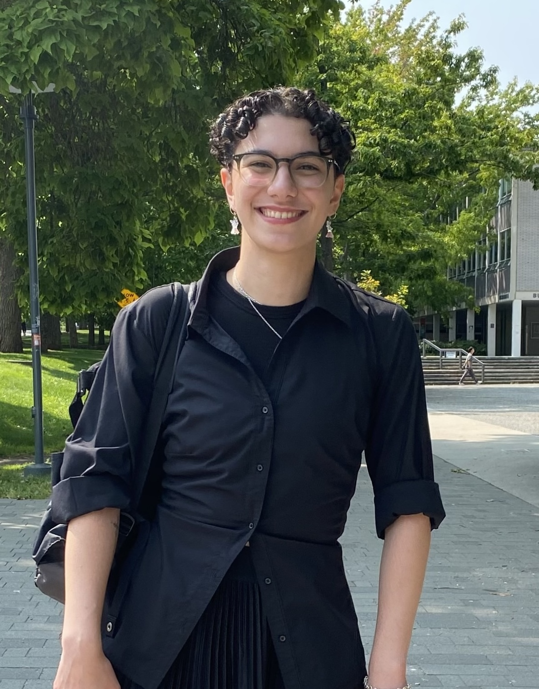

welcome!

My name is Auden Hafezi, and I use he/they pronouns. I'm a
fifth-year computer science student at UBC, and am interested in functional
programming*, programming languages, and computer science education.
I love to teach, and aspire to become a computer science professor! My goal is to inspire future
generations of students to learn about the theory
of computer science and programming languages. I am currently working as an undergraduate teaching
assistant for CPSC 311 (Definition of Programming Languages), and have previously TA'ed for CPSC 121 (Models
of Computation).
I am an undergraduate member of the ARLI
research group at UBC's
Software
Practices Lab, and am
currently working on a DSL for
type-directed instruction selection with Professor William Bowman. I am also working with a CS
Education research group led by Professor Steve Wolfman, where we are
conducting several studies intended to assess the impact of randomized assessments on students.
My personal interests include singing, crochet, cross-stitch, and volleyball! I am alto section
leader for UBC A Cappella's group Choral Reef! Please visit the
interests tab if you'd like to see some
of my art projects or learn more about my hobbies!
*Racket is the best programming language!!